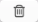

Help: Creating Snippets
Three Steps to Creating a Basic Snippet
- Click on
 in the toolbar or choose from the menu.
in the toolbar or choose from the menu. - Add the snippet content in to the "Content" box on the right.
- Assign an abbreviation in the "Abbreviation" box below the content.
Optional: Add a label for your snippet in the "Label" box, see below.
Note: You can also create new snippets from selected text or from the Clipboard contents. For more details, see below.
If you have TextExpander hidden in the Dock (see Preferences: Appearance), you will need to access the snippet creation menus via the TextExpander menu bar item or via predefined hotkey shortcuts.
A good abbreviation is:
- short
- easy to remember
- unlikely to be typed by accident
- unique
Duplicating an abbreviation's first character (ddate, ssig, zzip) is one way of creating abbreviations that meet these critieria. Another way is to use a period or other punctuation mark as the first character of your abbreviation (;date, 'sig, /zip).
If abbreviations are too similar, they will conflict. A small conflict indicator or duplicate indicator will appear at the bottom of the snippet list, and the abbreviation of the snippet will be highlighted in orange in the snippet list, or in blue if the snippet is an exact duplicate of another.
Conflicting abbreviations may not expand as desired, as the conflicting snippet may expand instead. (Duplicate snippets do not cause problems.)
If the conflict or duplicate indicator appears, you can edit the abbreviation of the snippet you are creating so it is unique, and the indicator will disappear. Or you can click the indicator to display a window showing the conflicting snippet or snippets. There you can resolve the problem by deleting the abbreviation of the other snippet, deleting the other snippet entirely, or editing the other snippet.
Format
Snippet content has four format options:
- Plain Text
When expanded, the snippet content conforms to the current text style. This is the standard snippet format, it works best for autocorrection and any other snippets where you want it to fit in with the format of the surrounding text. This can work with the macros listed below, but not with images. - Formatted Text, Pictures
Color, size, font and alignment can be specified for text and maintained upon expansion. Good for email signatures and graphics, this format can include hyperlinks. - AppleScript (advanced)
The snippet content can be an AppleScript, which is triggered by the abbreviation. (See Script Snippets) - Shell Script (advanced)
The snippet content can be a shell script, which is triggered by the abbreviation. (See Script Snippets) - JavaScript (advanced)
The snippet content can be a JavaScript or JavaScript for Automation (JSA), which is triggered by the abbreviation. (See Script Snippets)
To set content format, click on the drop down menu at the top of the Content box.
Using Formatted Text in Snippets
- Set the content format to Formatted Text, Pictures.
- Add snippet content in the Content box.
- Select text to be formatted.
- Click on the button below the Content window to access Font and Text options for fonts, size, color, and alignment.
Note: Not all fonts have all typeface options. For example, if you want italics you will need to find a font that offers that option.
Adding Images to Snippets
- Set the content format to Formatted Text, Pictures.
- Drag your image into the Content box or copy it to the Clipboard and use Command + V to paste it into TextExpander.
- To remove an image, use the Delete key.
A default content format is set in under the Expansion tab.
Adding Hyperlinks to Snippets
- Set the content format to Formatted Text, Pictures.
- Place a complete web address in the snippet, e.g. http://www.smilesoftware.com/
- If your link does not appear to be active immediately, then select it and Control-Click on it.
- In the following menu select "Make Link."
If you want to edit the visible text to say something else, or include an image in the link:
- Arrow your cursor into the active link text.
- Type or paste in the new text within the text of the active link so that the new text takes on the link properties. If you are adding an image, drag and drop it into the middle of the active link text.
- Delete the original text from around the new text or image.
You can also perform these steps in a word processor, and then copy/paste the results into the snippet content area.
Adding Macros to Snippets
Insert predefined macros to snippets via the insert button  below the Content box.
below the Content box.
Predefined macros include:
- Date
Inserts the day, month and year of the current date in a variety of formats. - Time
Inserts the current time in hours, minutes, seconds and AM/PM. - Date/Time Math
Inserts a date or time that takes the current date/time and adds to or subtracts from it; e.g. five days from today.
- Snippet
Nest a snippet within your snippet. For example, you might want to use your telephone number snippet in your email signature snippet. If your telephone number changes, you need only update one snippet. - Key
Inserts a key press for Enter, Esc, Return or Tab; useful for web forms. - Fill-in
Inserts custom fields into your snippets that can be filled in while expanding the snippet; useful for form letters, e.g. "Dear ____, Thank you for the ____." Other field options include popup menus and optional text sections. (See Creating and Using Fill-in Fields) - Clipboard
Inserts whatever is on the Clipboard into your snippet when expanded. - Picture...
Browse for an image to insert. Images can also be dragged directly into the content box or pasted from the Clipboard. The content menu of the snippet must be set to “Formatted Text, Picture.” Images can also be made into hyperlinks. - Cursor
Specify where you want the cursor to appear after the snippet is expanded. TextExpander repositions the cursor automatically if you use .
In cases where your editor might automatically add indenting to your snippet, or for other reasons, you can specify up, down, left and right arrow movements. These codes must be at the end of the snippet, and TextExpander processes them in reverse order.
For more information on Date, Time, and Date/Time Math, see Date, Time, and Math Macros. For more information on Snippet, Key, Clipboard, and Cursor, see Advanced Snippet Functions: Macros. For more information on Fill-ins, see Creating and Using Fill-in Fields.
Labeling Snippets
By default, a snippet's label is a shortened version of the snippet contents. You can specify a short, more useful label to appear in the snippet list instead. Enter the label in the Label field below the Content Box.
Preview Expanded Snippet
Preview a snippet's expanded state in the TextExpander window by clicking the Preview (eye) button next to the Label field. Particularly useful when creating date or time snippets.
Setting Case Sensitivity
TextExpander abbreviations can be case sensitive. There are three options:
- Case Sensitive (aB, Ab, ab, AB differ)
Example: "YT" expands to "Yours Truly", "yt" does not. - Ignore Case (aB, Ab, ab, AB same)
Example: either "YT" or "yt" expands to "Yours Truly" - Adapt Snippet to Case of Abbreviation
Example: "Yt" expands to "Yours truly", "yt" expands to "yours truly"
A default case sensitivity is set in under the Expansion tab. (See Preferences.) You can change the case sensitivity setting on individual snippets by clicking the drop-down menu bar above the Abbreviation box.
Create Snippet from Selection or Clipboard
A quick way to add snippets to your collection is to create new snippets based on a text selection or on the Clipboard contents. If you've just typed something and realize that it would be a useful snippet for future use, follow these steps:
- Select the text you want for the snippet content.
- Click the TextExpander menu bar item
- Click (or if you have copied the text to the Clipboard.)
The Create Snippet window opens with your selection (or the Clipboard contents) already entered in the Content field. Assign an abbreviation and a snippet group and click .
You can also access or via hotkey.
Edit last expanded snippet
You can easily edit snippets as you are using them. If you expand a snippet and realize that it needs to be revised (e.g. new phone number in your signature, new product name in your boilerplate), try this:
- Click the TextExpander menu bar item
- Click
- Make your revisions in the Edit Snippet window and click .
You can also access via hotkey.
Suggest Snippets
TextExpander can suggest new snippets based on what you type. After you have typed the same group of characters, letters or words enough times, it will suggest you create a snippet. All the snippet suggestions are collected in a Suggested Snippets group where they remain without abbreviations. You may choose to ignore them, add an abbreviation to complete them, or delete them.
TextExpander observes your keystrokes, as well as the contents of the pasteboard when you Paste using ⌘V.
TextExpander will track how many times you repeat the same group of characters and create a new suggestion after a certain amount of repetition. However, it does not save the tracking of what you type so the tracking is lost with each TextExpander restart. Therefore, frequent restarting of TextExpander won't result in many suggestions. None of what you type is saved by TextExpander except for the snippets listed in the Suggested snippets group.
“Tracking” does not mean TextExpander keeps a list of the actual characters you type. Instead, it keeps an encoded record (called a “hash”) of that group of characters, similar to the way a password is securely stored so that no one reading it knows what it is. You might type “yourpetsname” but what TextExpander sees and records is “1739405847385.”
Notifications
Once a word or phrase is typed often enough, TextExpander will inform you about this new snippet using Notification Center. From there you can choose:
- Keep Suggestion: Assign the suggested snippet an abbreviation.
- Drop Suggestion: Never recommend this group of characters as a snippet again.
For details on the settings see Preferences > Suggestions.
Deleting a Snippet
- Select the snippet in the Snippet list on the left side of the TextExpander main window.
- Click on  in the toolbar, or use the Delete key on your keyboard.
© SmileOnMyMac, LLC, dba Smile. All rights reserved.
TextExpander is a registered trademark, Smile and the Smile logo are trademarks of SmileOnMyMac, LLC, dba Smile.